PowerShell Module
Don’t let your friends dump git logs into changelogs.
# Changelog
All notable changes to this project will be documented in this file.
The format is based on [Keep a Changelog](https://keepachangelog.com/en/1.1.0/),
and this project adheres to [Semantic Versioning](https://semver.org/spec/v2.0.0.html).
## [Unreleased]
### Added
- Added a GitHub Pages user manual in `docs/` for people using the `KeepAChangelog` module, while keeping contributor and repository workflow guidance in `README.md`.
### Changed
- Changed CI so pull requests now run a dedicated CodeScene coverage-gate check against a Cobertura report generated from the built module, remapped back to `src/`, and validated against the full module source surface, while keeping the existing develop/manual coverage upload and analysis flow.
- Changed publish automation so pushes to `main` now release through `Invoke-NovaRelease -Repository PSGallery -ApiKey $env:PSGALLERY_API -SkipTests -ContinuousIntegration`, while pushes to `develop` keep using `Publish-NovaModule` for the prerelease publish path.
### Deprecated
### Removed
### Fixed
### Security
## [0.1.1] - 2026-05-02
### Added
- Created command `Initialize-KeepAChangelogFile`, allowed without `-PreviousReleaseReference`, and documented `main` and `develop` as valid previous refs.
- Created command `Move-UnreleasedChangelog`, `-Version` is required release input, and `-Date` is optional with `yyyy-MM-dd` validation.
[Unreleased]: https://github.com/stiwicourage/KeepAChangelog/compare/0.1.1...HEAD
[0.1.1]: https://github.com/stiwicourage/KeepAChangelog/compare/103d84a...0.1.1What is KeepAChangelog?
KeepAChangelog is a PowerShell module that helps you create, validate, and release
CHANGELOG.md files that follow the
Keep a Changelog convention.
Why use the module?
The module keeps the Unreleased section, optional compare links, release headings,
and release-note formatting consistent so you do not have to.
Who is this guide for?
This guide is for developers and release maintainers who want to use the module in a repository or CI/CD workflow. If you want to contribute to the module itself, use the GitHub repository docs instead of this site.
What can KeepAChangelog do?
Core features
- Create a new
CHANGELOG.mdtemplate that follows Keep a Changelog. - Add standard section headings such as
Added,Changed, andFixed. - Include an optional
[Unreleased]compare link footer when a previous release reference exists. - Validate an existing changelog and return structured errors when the file does not follow the expected format.
- Move unreleased notes into a new release section and clear the unreleased body for the next cycle.
- Update compare links and release links automatically as part of the release move when footer links are being maintained.
- Convert markdown release notes into a plain-text tag message for git tags or release automation.
Public commands
Initialize-KeepAChangelogFilecreates a new changelog template.Test-KeepAChangelogFilevalidates a changelog and returns the validation result.Move-UnreleasedChangelogpromotes the current unreleased notes into a release section.Get-KeepAChangelogVersionreturns the loaded module version for CI logs and troubleshooting.Convert-ChangelogReleaseNotesToTagMessageturns release notes into a tag-friendly plain-text message.
Frequently asked questions
Can I start without a previous release reference?
Yes. You can initialize a new changelog without footer links. On the first release,
pass -RepositoryUrl so the module can create the initial compare and release
links.
Footer links remain optional for validation. If you choose to keep a changelog without
compare links, Test-KeepAChangelogFile now validates the headings without
requiring a footer.
Can main or develop be used as the previous release reference?
Yes. Branch references are supported when your project has not created tags yet or when a branch ref is the right compare source for the first iteration.
Can I preview a release move before writing the file?
Yes. Move-UnreleasedChangelog supports PowerShell
-WhatIf, so you can inspect the returned data object without changing the
changelog on disk.
Where do I learn the underlying changelog rules?
Read the original Keep a Changelog specification for the convention itself. This module automates that workflow for PowerShell projects.
Installation and command guide
Install from PowerShell Gallery
Install the latest published stable version from PowerShell Gallery if you want to use the module in your own scripts, repositories, or release automation.
Install-Module -Name KeepAChangelog
# Or with PSResourceGet
Install-PSResource -Name KeepAChangelogInitialize a changelog
Create a new changelog template and pass -PreviousReleaseReference when
your project already has a released tag, commit SHA, or a legitimate branch reference
such as main or develop.
Initialize-KeepAChangelogFile `
-Path ./CHANGELOG.md `
-RepositoryUrl https://github.com/example/repo `
-PreviousReleaseReference developValidate a changelog
Check whether a changelog follows the expected structure before a release or inside CI.
$result = Test-KeepAChangelogFile -Path ./CHANGELOG.md
$result.IsValid
$result.ErrorsShow the loaded module version
Print the currently loaded KeepAChangelog version when you need CI output
or local debugging logs to show exactly which module build produced the result.
Get-KeepAChangelogVersionMove unreleased notes into a release
Promote the current ## [Unreleased] notes into a new versioned release
section and optionally update the compare links.
Move-UnreleasedChangelog `
-Path ./CHANGELOG.md `
-Version 1.6.0 `
-Date 2026-04-30Convert release notes into a tag message
Convert markdown release notes into plain text when you need a compact git tag or release message.
$releaseNotes = @'
### Fixed
- Fixed changelog formatting.
- Fixed compare link updates.
'@
Convert-ChangelogReleaseNotesToTagMessage -ReleaseNotes $releaseNotesHow can I use KeepAChangelog in a CI/CD environment?
KeepAChangelog works well in CI/CD because the module returns structured data that release automation can reuse for validation, changelog updates, release notes, and tag messages.
A typical CI/CD flow looks like this:
- Run
Test-KeepAChangelogFilein pull requests or CI to fail fast when the changelog format is invalid. - Run
Move-UnreleasedChangelogduring a release to promoteUnreleasednotes into a versioned release section. - Reuse the returned release data for follow-up automation such as commit messages, git tags, release notes, and compare links.
The release result is especially useful in automation because it includes values such as:
Release.Version,Release.Date, andRelease.TagKeepAChangelogVersionfor the module version that produced the release resultReleaseNotesBodyandTagMessageTextUpdatedUnreleasedLinkandNewReleaseCompareLinkUpdatedTextfor the rewritten changelog content
Examples from this repository:
- Tests.yml shows how validation and test automation run in CI.
Test-KeepAChangelogFile - Publish.yml shows how the module is used in the publish and release workflow.
Move-UnreleasedChangelog